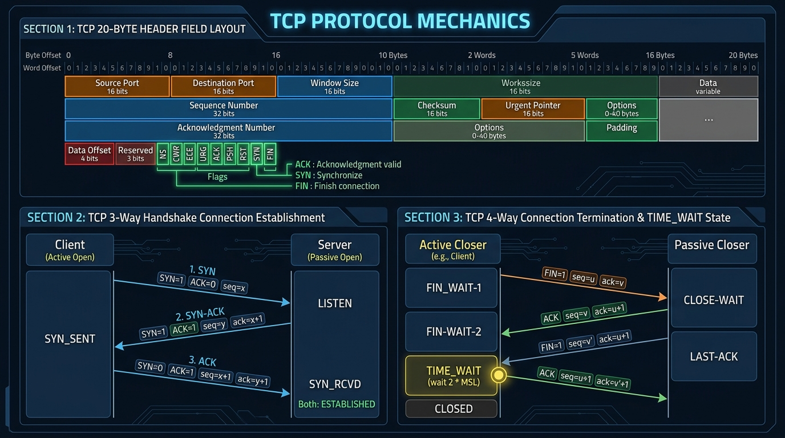

Master the 20-byte TCP Header format, 3-Way Handshake establishment (SYN, SYN-ACK, ACK), 4-Way Termination (FIN/ACK), and TCP state transitions.
TCP (RFC 793) is a connection-oriented, highly reliable, full-duplex protocol operating at the Transport Layer.
The standard TCP Header contains 20 fixed bytes (and up to 40 bytes of optional parameters).

TCP establishes a connection between Client and Server using a **3-Way Handshake**:
x to request a connection. Client enters SYN-SENT state.Ack = x + 1 and proposing its own sequence number Seq = y. Server enters SYN-RCVD state.Ack = y + 1). Both sides enter ESTABLISHED state and data transfer begins!Since TCP is full-duplex, terminating a connection requires closing each direction independently using a **4-Way Handshake**:
FIN-WAIT-1).FIN-WAIT-2; Server enters CLOSE-WAIT).LAST-ACK).TIME-WAIT state for 2 × MSL (Maximum Segment Lifetime = ~4 minutes) before closing.| TCP State | Description |
|---|---|
| CLOSED | No connection active. Default starting state. |
| LISTEN | Server is waiting for an incoming SYN request. |
| SYN-SENT | Client has sent SYN and is waiting for matching SYN-ACK. |
| SYN-RCVD | Server received SYN, sent SYN-ACK, waiting for final ACK. |
| ESTABLISHED | Connection active; full-duplex data transfer in progress. |
| FIN-WAIT-1 / 2 | Client active close initiated; waiting for server ACK / FIN. |
| CLOSE-WAIT / LAST-ACK | Server passive close; processing remaining data before final FIN. |
| TIME-WAIT | Client waiting 2*MSL to ensure clean closure before returning to CLOSED. |